Java data structure resource:
https://opendsa-server.cs.vt.edu/ODSA/Books/CS2/html/index.html
Lecture 1 Explaining Algorithms
What is an Algorithm: a finite set of instructions carried out in a specific order to perform a particular task
Input => Algorithm => Output
Characteristics of an Algorithm:
-
Unambiguity
-
Finiteness
-
Well-defined inputs
-
Language independent
-
Effectiveness and feasibility
-
Well-defined outputs
Factors of an Algorithm:
-
Modularity: Broken down into small modules
-
Correctness
-
Maintainability: no significant changes are required when redefining the algorithm
-
Functionality: Uses logical steps to solve a real-world problem
-
Robustness: Ability to define problem clearly
-
User-Friendly: Easily explained
-
Simplicity: Simple to understand
-
Extensibility: Extensible for other designers to use
Examples of Algorithms:
-
Brute-Force Algorithm
-
Searching
-
Sorting
-
Encryption
-
Hashing
-
Recursive
-
Divide and Conquer
-
Greedy Algorithm
Time Complexity:
-
The amount of time required to complete an algorithm.
-
Big O notation is used to represent an algorithm's time complexity
-
Calculated primarily by counting the number of steps required to complete the execution
Space Complexity:
-
The amount of space an algorithm requires to solve a problem and produce an output
-
Expressed in Big O notation
Big O - O(1)
-
This is the fastest. Looking for any record is equal in time to looking for any other record
-
Hash table is an example
Big O - O(log n)
-
Binary Search: starts in the middle. If that is not the result, the search repeats on the remaining left/right sublist (depending on if the middle element was greater than or less than the request). The process repeats until the number is found
-
Binary search uses a "divide and conquer" approach and requires sorted data
Big O - O(n)
- Linear search. Works on sorted and unsorted data. Starts from the beginning of a list and checks each element until the search key is found or the end of the list is reached.
Big O - O(n log n)
You have a deck of cards and whant to organize them in ascending order. Let's say you follow a specific strategy:
Split the deck into two halves, sort each half separately, and merge the halves into a single, sorted deck
Divide (log n): Each time you divide the deck, you reduce the problem size by half
Sort (n): When you sort each half, you're going through each card once. If there are n cards, sorting each half takes O(n) time.
Merge (log n): After sorting, merging the two halves involves looking at each card once. Again, since you're doing this log n times, it's O(n log n).
Big O - O(n^2)
- Quadratic ratio
Imagine you have a deck of cards and want to arrange them in ascending order. Here's how it works:
-
Compare and Swap: Go through the deck repeatedly, comparing the value of each card with the one next to it. IF a card's value is greater than the one next to it, swap their positions
-
Repeat: Keep going through the deck, comparing and swapping, until you make a pass through the entire deck without needing to swap any cards.
-
Continue: Repeat this process until the entire deck is sorted.
When you multiply these steps together, you get O(n^2). The time it takes to sort the deck grows quadratically with the number of cards in the deck
Lecture 2 Data Structures
Data Structures: a way of organizing, storing, and performing operations on data. Operations performed on a data structure include accessing or updating stored data, searching for specific data, inserting new data, and removing data.
Record: like a model in C#, represents an object with properties
Array: In python, it is imported.
-
Ordered/Indexed
-
Mutable
-
Duplicates are allowed
-
Must be homogenous
Linked List: Think of it like a music playlist. You add pointers to the songs to determine the order of the playlist. It is faster to add items to the linked list. It is slower to search.
-
Each node has data and pointer to next node
-
First (head) and last (tail) defined
-
Traversed from head to tail
-
Not indexed
-
Singly Linked List doesn't have memory of the previous record.
-
Doubly Linked List has pointers from head to tail AND tail to head
Binary Tree
-
Each node has up to two children, known as a left child and right child
-
Leaf: a tree node with no children
-
Internal node: A node with at least one child.
-
Parent: A node with a child is said to be that child's parent
-
Root: The one tree node with no parent (the "top" node)
Hash Table: very fast. Think of a dictionary
-
Stores unordered items by mapping (or hashing) each item to a location in an array
-
Each element is a "bucket"
-
Items use a key to compute bucket value
Heap: scenario would be a priority queue for Task Scheduling
-
Root is always highest number (max heap)
-
Node is always greater than child (max heap)
-
New items percolate to proper spot
-
Heapification - moving nodes in the tree around so that the parent is always the highest value
Graph: Think of navigation with Google Maps
-
Vertex (or node) represents an item in a graph
-
An edge represents a connection between two vertices
Lecture 3 Abstract Data Types
Abstract Data Types: a data type described by predefined user operations without explaination. EX: "insert data at rear" or "add to front"
-
List, array, linked lists are a common ADT
-
Abstraction means to have a user interact with an item at a high-level, with lower-level internal details hidden from the user
-
ADTs support abstraction by hiding the underlying implementation details and providing a well-defined set of operations
-
Allow programmers to focus on higher level operations
Common ADTs:
-
List
-
Dynamic Array
-
Stack
-
Queue
-
Deque
-
Bag
-
Set
-
Priority Queue
-
Dicionary (map)
List
- Holds ordered data, is indexed. Begin at 0. Underlying structure may be an Array or Linked List
Dynamic Array
-
holding ordered data and allowing indexed access
-
Don't have to manually resize the array
Stack
-
Can only be added or removed to the top of the stack.
-
Underlying could be Linked List
-
Last in First out (LiFi)
Queue
-
First in, first out (FiFo)
-
Underlying is Linked List
Deque
-
Double ended Queue
-
Can remove from the front and back
-
Underlying is Linked List
Set
-
Unordered with No duplicates
-
Underlying Array, linked list
Bag
-
Allows duplicates, unordered
-
Underlying Binary tree, hash table
Priority Queue
-
Putting higher priority to the front
-
Underlying is the Heap
Dictionary
-
Associates a word with a definition (key value pair)
-
Underlying is Hash, binary search tree
Lecture 4 Trees, HEaps, and Hash Tables
Binary Tree Basics
-
At most have two children (binary) known as left and right child
-
Root: the top node
-
Internal node: A node with atleast one child, including the root.
-
No children makes the node a leaf
-
Parent: a node with a child is the parent. Ancestors include the node's parent, the parent's parent and up to the root.
-
edge: the link from a node to a child
-
Depth: number of edges on the path from the root to the node. The root node thus has depth 0.
-
Tree level: all nodes with the same depth
-
Tree Height: the largest depth of any node. A tree with just one node has a height of 0.
-
A binary tree is full if every node contains 0 or 2 children
-
A binary tree is complete if all levels, except possibly the last level, contain all possible nodes and all nodes in the last level are as far left as possible
-
A binary tree is perfect, if all internal nodes have 2 children and all leaf nodes are the same level.
Binary Search Tree
Binary search tree (BST): has an ordering properyt that any node's left subtree keys are less than or equal to the node's key, and the right subtree's keys are greater than or equal to the node's key.

-
Binary search trees are fast. Searching a BST in the worst case scenario requires H + 1 comparisons, meaning O(H) comparisons, where H is the tree height
-
A BST search may be as small as O(log n)
-
Thry to keep the tree balanced for best search speed
-
A ** Tree traversal** algorithm visits all nodes in the tree once and performs an operation on each node
-
An inorder traversal visits all nodes in a BST from smallest to largest, which is useful for example to print the tree's nodes in sorted order
- Starting from the root, the algorithm recursively prints the left subtree, the current node, and the right subtree

Heaps
-
Used when application requires fast access to and removal of the maximum item in a changing set of items
-
Heaps keep the highest priority on top but does not fully sort the lower nodes
-
A max-heap is a complete binary tree that maintains the simple property that a node's key is greater than or equal to the node's children's key
-
Therefore, a max-heap's root always has the maximum key in the entire tree
-
Heapification: The process in which an array or binary tree is reshaped into a Heap data structure. Since leaf nodes already satisfy the max heap property heapifying to build a max-heap is achieved by percolating down on every non-leaf node in reverse order. A heap must be a complete binary tree.
-
Percolating: ?
-
Heapsort:
-
Heapify the array into a max-heap
-
Initialize an end index value to the size of array minus 1
-
Repeatedly remove the maximum value, stores @ the end index
-
Decrement end index
-
Repeat until the end index is 0
-
Hash Table
-
Has table: sotres unordered items by mapping (or handling) each item to a location in an array
-
Each element is a bucket
-
In a hash table, an item's key is the value used to map to an index
-
Keys are ideally unique
-
A hash function computes a bucket index from the item's key. O(1)
-
Collisions: occurs when an item being inserted into a hash table maps to the same bucket as an existing item in teh hash table
-
Chaining: each bucket has a list of items
-
Probing: looks for an empty bucket elsewhere
-
An empty-since-start bucket has been empty since the hash table was created
-
An empty-after-removal bucket had an item removed that caused the bucket to now be empty
-
Lecture 5 Graphs
Graphs: a data structure for representing connections among items
-
Computer networks
-
Product recommendations
-
Social networks
They are often used to represent a geographic map
Components:
-
Vertices (nodes)
-
Edges: what connects nodes. Nodes are adjacent, connected by an edge
Terminology
-
Path: Sequence of edges leading from source to target
-
Path Length: Total number of edges in a path
-
Distance: Number of edges on the shortes path of 2 werticies
-
Edge Weights: Associates a weight (cost, time, etc.) with each edge. Often represents the length of a travel routes, either in total distance or expected time
-
Directed Edges: Sequence of directed edges leading from a source to a destination vertex.
-
Cycle: a path that starts and ends at the same vertex. A directed graph is cyclic if the graph contains a cycle, and acyclic if the graph does not contain a cycle
Adjacency List
- Each vertex has a list of adjacent verticies, each list item representing an edge

Searching
Breadth First Search: traverse a graph by starting at a specific vertex and visiting the vertex's adjacent vertices before visiting the next closest verticies. No vertex is re-visited
Depth First Search: traverse a graph by first visiting a specific starting vertex, and then visiting every vertex along each path originating from the starting vertex. Each path is traversed to the path's end before backtracking.
Dijkstra's Algorithm: Determines the shortest path from a start vertex to each vertex in a graph.
-
For each vertex, Dijkstra's algorithm determines the vertex's distance and predecessor pointer.
-
distance is the shortest path from the start
-
The vertex's predecessor pointer points to the previous vertex along the shortest path.
Lecture 5 Sorting Algorithms
- Nested for or while loops will cause the algorithm to be O(n^2)
Bubble Sort
-
Because of the nested loops, bubble sort has a runtime of O(n^2).
-
Bubble sort is often considered impractical for realworld use because many faster sorting algorithms exist
BubleSort(numbers, numbersSize) {
for (i = 0; i< numbersSize - 1; i++) {
for (j = 0; j < numbersSize - i - 1; j++) {
if (numbers[j] > numbers[j +1]) {
temp = numbers[j]
numbers[j] = numbers[j + 1]
numbers[j + 1] = temp
}
}
}
}
Selection Sort
-
sorting algorithm that treats the input as two parts, a sorted part and an unsorted part. It repeatedly finds the lowest value and swaps it with the current element being examined, moving it from the unsorted part to the end of the sorted part
-
runtime of O(n^2).
for (i = 0; i < numbersSize - 1; ++i) {
//Find index of smallest remaining element
indexSmallest = i
for (j = i + 1; j < numbersSize; ++j) {
if (numbers[j] < numbers[indexSmallest]) {
indexSmallest = j
}
}
//Swap numbers[i] and numbers[indexSmallest]
temp = numbers[i]
numbers[i] = numbers[indexSmallest]
numbers[indexSmallest] = temp
}
Insertion Sort
-
sorts by treating the input as two parts, sorted and unsorted. It repeatedly moves the next value from the unsorted part to the sorted part, where it is then moved into the proper location
-
O(n^2)
for i in range(1, len(numbers)):
j = 1
# Insert numbers[i] into sorted part
# stopping once numbers[i] in correct position
while j > 0 and numbers[j] < numbers[j - 1]:
# Swap numbers[j] and numbers[j - 1]
temp = numbers[j]
numbers[j] = numbers[j - 1]
numbers[j-1] = temp
j = j - 1
Quick Sort
-
O(n log n)
-
repeatedly partitions the input into low and high parts ( each part unsorted), and then recursively sorts each of those parts. To partition the input, quicksort chooses a pivot to divide the data into low and high parts. The pivot can be any value within the array being sorted.
-
Once the pivot is chosen, the array is divided into two parts. Items to the left are less than the pivot, while items to the right are greater.
-
The values in each partition are not necessarily sorted
-
Values equal to the pivot may appear in either or both of the partitions
# Main
numbers = [ 12, 18, 3, 7, 32, 14, 91, 16, 8, 57]
print('UNSORTED:', numbers)
quicksort(numbers, 0, len(numbers)-1)
print('SORTED:', numbers)
# Quicksort definition
def quicksort(numbers, start_index, end_index):
# Only attempt to sort the list segment if there are
# at least 2 elements
if end_index <= start_index:
return
# Partition the list segment
high = partition(numbers, start_index, end_index)
# Recursively sort the left segment
quicksort(numbers, start_index, high)
# Recursively sort the right segment
quicksort(numbers, high + 1, end_index)
# Partition definition
def partition(numbers, start_index, end_index):
# Select the middle value as the pivot
midpoint = start_index _ (end_index - start_index) // 2
pivot = numbers[midpoint]
# "low" and "high" start at the ends of the list segment
# and move towards each other
low = start_index
high = end_index
done = False
while not done:
# Increment Low while numbers{Low} < pivot
while numbers[low] < pivot:
low = low + 1
# Decrement high while pivot < numbers[high]
while pivot < numbers[high]:
high = high - 1
# If low and high have crossed eachother, the loop
# is done. If not, the elements are swapped, low is
# incremented and high is decremented
if low >= high:
done = True
else:
temp = numbers[low]
numbers[low] = numbers[high]
numbers[high] = temp
low = low + 1
high = high - 1
# "high" is the last index in the left segment
return high
Merge
-
O(n log n)
-
divides a list into two halves, recursively sorts each half, and then merges the sorted halves to produce a sorted list. The recursive partitioning continues until a list of one element is reached, as a list of one element is already sorted
# Main
# Create a list of unsorted values
numbers = [61, 76, 19, 4, 94, 32, 27, 83, 58]
# Print unsorted list
print('UNSORTED:', numbers)
# Initial call to merge_sort
merge_sort(numbers, 0, len(numbers) - 1)
# Print sorted list
print('SORTED:', numbers)
# Merge Sort definition
def merge_sort(numbers, i, k):
j = 0
if i < k:
j = (i+ k) // 2 Find the midpoint in the partition
# Recursively sort left and right partition
merge_sort(numbers, i, j)
merge_sort(numbers, j + 1, k)
# Merge left and right partition in sorted order
merge(numbers, i, j, k)
# Merge definition
def merge(numbers, i, j, k):
merge_size = k - i + 1 # Size of merged partition
merged_numbers = [0] * merged_size # Dynamically allocates temporary array
# for merged numbers
merge_pos = 0 # Position to insert merged number
left_pos = i # Initialize left partition position
right_pos = j + 1 # Initialize right partition position
# Add smallest element from left or right partition to merged numbers
while left_pos <= j and right_pos <=k:
if numbers[left_pos] <= numbers[right_pos]:
merged_numbers[merge_pos] = numbers[left_pos]
left_pos += 1
else:
merged_numbers[merge_pos] = numbers[right_pos]
right_pos += 1
merge_pos = merge_pos + 1
# If left poartition is not empty, add remaining elements to merged numbers
while left_pos <= j:
merged_numbers[merge_pos] = numbers[left_pos]
left_pos += 1
merge_pos +=1
# If right partition is not empty, add remaining elements to merged numbers
while right_pos <= k:
merged_numbers[merge_poe] = numbers[right_pos]
right_pos = right_pos + 1
merge_pos = merge_pos + 1
# Copy merge number back to numbers
for merge_pos in range(merged_size):
numbers[i + merge_pos] = merged_numbers[merge_pos]
Radix Sort
-
O(n)
-
designed for integers. The algorithm makes use of a concept called buckets and is a type of bucket sort
-
Any array of integer values can be subdivided into buckets by using the integer values' digits. Abucket is a collection of integer values that all share a particular digit value. Ex: Values 57, 97, 77, and 17 all have a 7 as the 1's digit and would all be placed into bucket 7 when subdividing by the 1's digit
ZyBook
| Data structure | Description |
|---|---|
| Record | A record is the data structure that stores subitems, often called fields, with a name associated with each subitem. |
| Array | An array is a data structure that stores an ordered list of items, where each item is directly accessible by a positional index. |
| Linked list | A linked list is a data structure that stores an ordered list of items in nodes, where each node stores data and has a pointer to the next node. |
| Binary tree | A binary tree is a data structure in which each node stores data and has up to two children, known as a left child and a right child. |
| Hash table | A hash table is a data structure that stores unordered items by mapping (or hashing) each item to a location in an array. |
| Heap | A max-heap is a tree that maintains the simple property that a node's key is greater than or equal to the node's childrens' keys. A min-heap is a tree that maintains the simple property that a node's key is less than or equal to the node's childrens' keys. |
| Graph | A graph is a data structure for representing connections among items, and consists of vertices connected by edges. A vertex represents an item in a graph. An edge represents a connection between two vertices in a graph. |
1.2 Algorithm Overview
Algorithm: a set of commands that must be followed for a computer to perform calculations or other problem-solving operations
1.3 Introduction to algorithms
-
An algorithm can be described in English, pseudocode, a programming language, hardware, etc.
-
Computational Problem: specifies an input, a question about the input that can be answered using a computer, and the desired output.
-
Algorithm efficiency is most commonly measured by the algorithm runtime. and an efficient algorithm is one whose runtime increases no more than polynomially with respect to the input size.
-
NP-complete problems are a set ofproblems for which no known efficient algorithm exists. NP-complete problems have the following characteristics:
-
No efficient algorithm has been found to solve an NP-complete problem
-
No one has proven that an efficient algorithm to solve an NP-complete problem is impossible
-
If an efficient algorithm exists for one NP-complete problem, then all NP-complete problems can be solved efficiently
-
1.4 Relation between data structures and algorithms
Data structures define how data is stored and defines the operations performed on the data strucutre.
1.5 Abstract Data Types (ADT)
Abstract Data Type: described by predefined usr operations, such as "insert data at rear", without indicating how each operation is implemented.
Common ADTs:
| Abstract data type | Description | Common underlying data structures |
|---|---|---|
| List | A list is an ADT for holding ordered data. | Array, linked list |
| Dynamic | array A dynamic array is an ADT for holding ordered data and allowing indexed access. | Array |
| Stack | A stack is an ADT in which items are only inserted on or removed from the top of a stack. | Linked list |
| Queue | A queue is an ADT in which items are inserted at the end of the queue and removed from the front of the queue. | Linked list |
| Deque | A deque (pronounced "deck" and short for double-ended queue) is an ADT in which items can be inserted and removed at both the front and back. | Linked list |
| Bag | A bag is an ADT for storing items in which the order does not matter and duplicate items are allowed. | Array, linked list |
| Set | A set is an ADT for a collection of distinct items. | Binary search tree, hash table |
| Priority | queue A priority queue is a queue where each item has a priority, and items with higher priority are closer to the front of the queue than items with lower priority. | Heap |
| Dictionary | (Map) A dictionary is an ADT that associates (or maps) keys with values. | Hash table, binary search tree |
1.6 Application of ADTs
1.8 Huffman Compression
Basic Compression
Compression: transforms the data to use fewer bits. Compressed data uses less storage and can be communicated faster. The basic idea is to encode frequently occurring items using fewer bits.
A dictionary can be used to swap the long string for the defined charater in the dictionary. Like "01000001" for the original, meaning "A", is changed to "0" by the dictionary, where "0" is defined as "A". In the dictionary "G" = 110, so 01000111 is changed to 110.
A character frequency table is build for an input string. It contains each distinct character from the input string and each character's number of occurences
Huffman Coding
Huffman coding is a common compression technique that assigns fewer bits to frequent items, using a binary tree.

Note: For Huffman encoded data, the dictionary must be included along with the compressed data to enable compression.
Building a Huffman Tree
-
Leaf nodes have two data members: a character from the input and an integer frequency for that character
-
Internal nodes have left and right child nodes.

Decoding Huffman

1.9 Heuristics
Heuristic: A technique that willingly accepts a non-optimal or less accurate solution in order to improve execution speed. Sacrifice accuracy and optimization for speed.

Heuristic algorithm: quickly determines a near optimal or approximate solution.
Self-adjusting Heuristic: modifies a data structure based on how the data structure is used. Used in a red-black tree or AVL tree. Used to speed up searches for frequently-searched items.
1.10 Python: Heuristics (Knapsack)
The 0-1 knapsack problem imposes the restriction that each item can be added at most once. A heuristic algorithm to solve the knapsack problem first sorts items in descending order by value, and then iteratively places the most valuable items that fit within the remaining space into the knapsack until no more items can be added.
1.11 Python: Greedy algorithm
Greedy algorithm solves a problem by assuming that the optimal choice at a given moment during the algorithm will also be the optimal choice overall. Greedy algorithms tend to be efficient, but some may not find the optimal solution.
Works for the knapsack problem and the activity selection problem
Fractional Knapsack Problem
Sort items by value to weight ratio, in descending order.
Activity Selection Problem
Run the python script for 1.11.3 Activity Selection, the optimal result is the count of how many different activities are scheduled. So three one-hour activities are considered better than a single four hour activity
The greedy algorithm shown will always produce the optimal result for the activity selection problem
1.12 Dynamic Programming
Dynamic Programming: problem solving technique that splits a problem into smaller subproblems, computes and stores solutions to subproblems in memory, and then uses the stored solutions to solve the larger problem.
Look at 1.12.1_fibonacci_recursive_vs_dynamic. The recursive method has a runtime of O(1.62^N) while the iterative/dynamic method has a runtime of O(N)
Dynamic programming avoids recomputing previously computed results by storing and reusing such results
Longest Common Substring
Longest Common Substring algorithm takes 2 strings as input and determines
the longest substring that exits in both strings. It uses dynamic programming.
It uses an N x M integer matrix to keep track of matching substrings.
The runtimes of the Longest Common Substring is O(NxM)
A real-world example is finding two common substrings in DNA sequences

Lists
2.1 List abstract data type
Common Operations:
| Operation | Description | Example starting with list: 99, 77 |
|---|---|---|
| Append(list, x) | Inserts x at end of list | Append(list, 44), list: 99, 77, 44 |
| Prepend(list, x) | Inserts x at start of list | Prepend(list, 44), list: 44, 99, 77 |
| InsertAfter(list, w, x) | Inserts x after w | InsertAfter(list, 99, 44), list: 99, 44, 77 |
| Remove(list, x) | Removes x | Remove(list, 77), list: 99 |
| Search(list, x) | Returns item if found, else returns null | Search(list, 99), returns item 99 Search(list, 22), returns null |
| Print(list) | Prints list's items in order | Print(list) outputs: 99, 77 |
| PrintReverse(list) | Prints list's items in reverse order | PrintReverse(list) outputs: 77, 99 |
| Sort(list) | Sorts the lists items in ascending order | list becomes: 77, 99 |
| IsEmpty(list) | Returns true if list has no items | For list 99, 77, IsEmpty(list) returns false |
| GetLength(list) | Returns the number of items in the list | GetLength(list) returns 2 |
2.2 List Data Structure
List data structure: will contain the list's head, tail, and information like list size.
Linked List has an O(N) space complexity.
A List space complexity is O(1).
2.3 Singly-linked Lists
Singly-linked list has pointers to the next node. It is a type of positional list.
2.4 Singly-Linked List: Insert
2.5 Singly-Linked List: Remove
2.6 Linked List Search
2.7 Python Linked List
See the example in folder 2.7 Linked List
2.8 Doubly-linked lists
Has pointer to next and previous node. Another type of positional list.
2.11 Python: Doubly-linked List
See 2.11 Doubly Linked List folder for example
2.12 Circular Lists
Where the tail's next pointer is to the head node. Head node previous is to the tail node.
2.13 Linked List Traversal
List Traversal visits all nodes and performs an operation
2.14 Sorting Linked Lists
Insertion sort must be a Doubly-linked-list, it will rerquire backwards traversal.
Insertion Sort runtime is O(N^2)
Singly List Sort is the same runtime, O(N^2)
Sorting linked-lists vs. arrays
Sorting algorithms for arrays, such as quicksort and heapsort, require constant-time access to arbitrary, indexed locations to operate efficiently. Linked lists do not allow indexed access, making for difficult adaptation of such sorting algorithms to operate on linked lists.
Sorting algorithms that easily adapt to link list:
-
Insertion Sort: Operates similarly on doubly-linked lists.Requires searching from the head of the list for an elements's insertion position ofr singly-linked lists.
-
Merge Sort: Finding the middle of the list requires searching linearly from the head of the list. The merge algorithm can also merge lists without additional storage.
Sorting Algorithms that are difficult to adapt to efficiently with sort linked lists:
-
Shell Sort: Jumping the gap between elements cannot be done on a linked list, as each element between two elements must be traversed.
-
Quicksort: Partitioning requires backward traversal through the right portion of the array. Singly-linked lists do not support backward traversal.
-
Heap sort: Indexed access is required to find child nodes in constant time when percolating down.
2.15 Python Sorting Linked Lists
See examples for 2.15 sorting singly and doubly linked lists
2.16 Linked List dummy nodes
dummy node (or header node): A node with an unused data member that always resides at the head of the list and cannot be removed. Using a dummy node simplifies the algorithms for a linked list because the head and tail pointers are never null.
An empty list consists of the dummy node, which has the next pointer set to null, and the list's head and tail pointers both point to the dummy node.
2.17 Linked List: Recursion
Used for list traversal
Used for searching
Used for reverse traversal
2.18 Array-based lists
array-based lists: list ADT implemented using an array. Unlike normal arrays, the list size will dynamically allocate as needed.
Resize Operation: array-based lists must be re-sized if an item is added when the allocation size equals the list length. Copying items from the old array to the new array has a runtime of O(N).
Prepend: runtime of O(N), all items have to be moved by one position to make room at the front.
Search: returns -1 if not found. Worst case runtime of O(N).
2.19 Python Array based List Example
see 2.19 Array List folder. After running py main.py, enter insert_after 5 3
Stacks and Queues
3.1 Stack abstract data type (ADT)
Stack: only inserted or removed from the top of the stack.
-
Operations: push and pop
-
Last-in-first-out
Common Stack operations:
| Operation | Description | Example starting with stack: 99, 77 (top is 99). |
|---|---|---|
| Push(stack, x) | Inserts x on top of stack | Push(stack, 44). Stack: 44, 99, 77 |
| Pop(stack) | Returns and removes item at top of stack | Pop(stack) returns: 99. Stack: 77 |
| Peek(stack) | Returns but does not remove item at top of stack | Peek(stack) returns 99. Stack still: 99, 77 |
| IsEmpty(stack) | Returns true if stack has no items | IsEmpty(stack) returns false. |
| GetLength(stack) | Returns the number of items in the stack | GetLength(stack) returns 2. |
Note: Pop and Peek operations should not be applied to an empty stack; the resulting behavior may be undefined.
3.2 Stacks Using Linked Lists
3.3 Python: Array-based stacks
Unbounded stack: stack with no upper limit on length.
Bounded stack: length that does not exceed a maximum value.
See example of an optionally bounded Stack ADT in 3.3.1 List Based Stack folder
3.4 Queue abstract data type (ADT)
Queue: items are added to the end of the queue and removed from the front. Referred to as a first-in first-out ADT.
Enqueue: adds an item to the end of the queue
Dequeue: removes an item from the front.
Common Queue operations:
| Operation | Description | Example starting with queue: 43, 12, 77 (front is 43) |
|---|---|---|
| Enqueue(queue, x) | Inserts x at end of the queue | Enqueue(queue, 56). Queue: 43, 12, 77, 56 |
| Dequeue(queue) | Returns and removes item at front of queue | Dequeue(queue) returns: 43. Queue: 12, 77 |
| Peek(queue) | Returns but does not remove item at the front of the queue | Peek(queue) return 43. Queue: 43, 12, 77 |
| IsEmpty(queue) | Returns true if queue has no items | IsEmpty(queue) returns false. |
| GetLength(queue) | Returns the number of items in the queue | GetLength(queue) returns 3. |
3.5 Queues using linked lists
Queues often use linked lists
3.6 Python: Array-based queues
Look at the example in 3.6 Array Based Queue folder.
A queue can be implemented with an array. Two variables are needed in addition to the array:
-
length: an integer for the queue's length.
-
front_index: an integer for the queue's front item index.
Queues can be bounded or unbounded
An array-based queue implementation can support both bounded and unbounded queue operations by using max_length as follows:
-
If max_length is negative, the queue is unbounded.
-
If max_length is nonnegative, the queue is bounded.
Worst-case time complexity
Using the implementation from above, worst-case time complexities are the same whether the queue is bounded or unbounded: O(N) for enqueue and O(1) for dequeue.
An alternate implementation of the bounded queue, not presented in this section, uses max_length as the array's initial allocation size. Such an implementation never needs to resize and so the enqueue operation's worst-case time is O(1).
3.7 Python: Stacks and queues using linked lists
see Queue and Stack examples from 3.7 Queue Stack Linked List folder
3.8 Deque abstract data type (ADT)
Deque (deck): double ended queue, is an ADT in which items can be inserted and removed at both front and back.
Common Operations:
| Operation | Description | Example starting with deque: 59, 63, 19 (front is 59) |
|---|---|---|
| PushFront(deque, x) | Inserts x at the front of the deque | PushFront(deque, 41). Deque: 41, 59, 63, 19 |
| PushBack(deque, x) | Inserts x at the back of the deque | PushBack(deque, 41). Deque: 59, 63, 19, 41 |
| PopFront(deque) | Returns and removes item at front of deque | PopFront(deque) returns 59. Deque: 63, 19 |
| PopBack(deque) | Returns and removes item at back of deque | PopBack(deque) returns 19. Deque: 59, 63 |
| PeekFront(deque) | Returns but does not remove the item at the front of deque | PeekFront(deque) returns 59. Deque is still: 59, 63, 19 |
| PeekBack(deque) | Returns but does not remove the item at the back of deque | PeekBack(deque) returns 19. Deque is still: 59, 63, 19 |
| IsEmpty(deque) | Returns true if the deque is empty | IsEmpty(deque) returns false. |
| GetLength(deque) | Returns the number of items in the deque | GetLength(deque) returns 3. |
4 Hash Tables
4.1 Hash Tables
Hash Table: Stores unordered items by mapping (or hashing) each item to a location in an array (or vector). An item's key is the value used to map to an index. Each hash table array element is called a bucket. A hash function computes a bucket index from the item's key.
Commonly use the modulo operator % in hash functions
Collisions
Collisions: occur when an item being inserted into a hash table maps to the same bucket as an exiting item.
-
Chaining: is a collision resolution technique where each bucket has a list of items (so bucket 5's list would become 55, 75).
-
Open addressing: is a collision resolution technique where collisions are resolved by looking for an empty bucket elsewhere (so 75 might be stored in bucket 6).
4.2 Chaining
4.3 Linear Probing
Linear probing: handles collision by starting at the key's mapped bucket, and then linearly searches subsequent buckets until an empty bucket is found.
Empty Bucket Types
Two types of empty buckets:
-
Empty-since-start: bucket has been empty since the hash table was created.
-
Empty-after-removal: bucket had an item removed that caused the bucket to now be empty.
Searching stops for empty-since-start buckets
4.4 Quadratic Probing
A hash table with quadratic probing handles a collision by starting at the
key's mapped bucket, and then quadratically searches subsequent buckets until
an empty bucket is found. If an item's mapped bucket is H, the formula
(H + c1 * i + c2 * i^2)mod (table size) is used to determine the item's index
in the hash table. c1 and c2 are programmer-defined constants for quadratic
probing. Inserting a key uses the formula, starting with i = 0, to repeatedly
search the hash table until an empty bucket is found. Each time an empty bucket
is not found, i is incremented by 1. Iterating through sequential i values to
obtain the desired table index is called the probing sequence.

4.5 Double Hashing
Double hashing is an open-addressing collision resolution technique that uses 2 different hash functions to compute bucket indices.
-
(h1(key) + i* h2(key)) mod (table size)where h1 and h2 are the hash functions and i is incremented until an empty bucket is found. -
The i in the above sequence displays a probing sequence

4.6 Hash Table Resizing
Commonly resizes to the next prime number >= N * 2. A new array is allocated and all items from the old array are re-inserted into the new array. Resizing operations time complexity = O(N)
When to resize
Load Factor: is the number of itmes in the hash table divided by the number of buckets. Ex: 18/31 = 0.58.
An implementation may choose to resize the hash table when one or more of the following values exceeds a certain threshold:
- Load factor
- When using open-addressing, the number of collisions during an insertion
- When using chaining, the size of a bucket's linked-list
In a hash table using open addressing, the load factor cannot exceed 1.0.
In a hash table using chaining, the load factor can exceed 1.0.
4.7 Common hash functions
** A good hash function minimizes collisions**
A perfect hash function maps items to buckets with no collisions. A perfect hash function can be created if the number of items and all possible item keys are known beforehand. The runtime for insert, search, and remove is O(1) with a perfect hash function.
-
With chaining, a good hash function results in short bucket lists and thus fast inserts, searches, and removes.
-
With linear probing, a good hash function will avoid hashing multiple items to consecutive buckets and thus minimize the average linear probing length to achieve fast inserts, searches, and removes.
Modulo hash function
Mid-square hash function
A mid-square hash squares the key, extracts R digits from the result's middle, and returns the remainder of the middle digits divided by hash table size N.
Ex: For a hash table with 100 entries and a key of 453, the decimal (base 10)
mid-square hash function computes 453 * 453 = 205209, and returns the middle
two digits 52. For N buckets, R must be greater than or equal to [log10 N]
to index all buckets. The process of squaring and extracting middle digits
reduces the likelihood of keys mapping to just a few buckets.
Multiplicative string hash function
A multiplicative string hash repeatedly multiplies the hash value and adds the ASCII (or Unicode) value of each character in the string.
EX:
Initial value = 0
Hash multiplier = 1
String = BAT
A hash multiplier of 1 will simply add the characters' ASCII values.
stringHash = InitialValue + B + A + T = 0 + 66 + 65 + 84 = 215.
215 % 1000 = 215.
------------------------
InitialValue = 17
HashMultiplier = 3
String = WE
stringHash = InitialValue = 17
stringHash = 17 * 3 + W = 17 * 3 + 87 = 138.
stringHash = 138 * 3 + E = 138 * 3 + 69 = 483.
483 % 1000 = 483.
4.8 Direct Hashing
A direct hash function uses the item's key as the bucket index. Ex: If the key is 937, the index is 937. A hash table with a direct hash function is called a direct access table. Given a key, a direct access table search algorithm returns the item at index key if the bucket is not empty, and returns null (indicating item not found) if empty.
A direct access table has the advantage of no collisions: Each key is unique (by definition of a key), and each gets a unique bucket, so no collisions can occur. However, a direct access table has two main limitations.
-
All keys must be non-negative integers, but for some applications keys may be negative.
-
The hash table's size equals the largest key value plus 1, which may be very large.
4.9 Hashing Algorithms: Cryptography, Passowrd Hashing
Cryptography is a field of study focused on transmitting data securely. Secure data transmission commonly starts with encryption: alteration of data to hide the original meaning. The counterpart to encryption is decryption: reconstruction of original data from encrypted data.
Ex: A hashing algorithm called MD5 produces a 128-bit hash value for any input data. The hash value cannot be used to reconstruct the original data, but can be used to help verify that data isn't corrupt and hasn't been altered.
4.10 Python: Hash Tables
Section has examples of Double-Hashing, Quadratic Probing Hashing, Linear Probing, Chaining, and Open Addressing.
See folder 4.10 HashTables
4.11 LAB: Course gradebook with dict
5 Trees
5.1 Binary Trees
Each node has up to 2 children, known as left child and right child
Leaf: a tree with no children
Internal node: A node with at least one child.
Parent: A node with a child is said to be that child's parent. A node's ancestor include the node's parent, the parent's parent, etc.. up to the root.
Root: The on tree node with no parent (the top node).
Edge: the link between a child and the parent node.
Depth: is the number of edges on the path from the root to the node. The root node thus has depth 0.
Height: is the largest depth of any node. A tree with just one node has a height of 0.
A binary tree is full if every node contains 0 or 2 children.
A binary tree is complete if all levels, except possibly the last level, contains all possible nodes and all nodes in the last level are as far left as possible.
A binary tree is perfect if all internal doces have 2 children and all leaf nodes are at the same level.

5.2 Applications of Trees
File System
Files are always leafs. Empty folders are leafs.
Binary space partitioning
Binary Space Partitioning (BSP): technique of repeatedly separating a region of space into 2 parts and cataloging objects contained within the regions.
A BSP tree is a binary tree used to store information for binary space partitioning. Each node in a BSP tree contains information about a region of space and which objects are contained in the region.
In graphics applications, a BSP tree can be used to store all objects in a multidimensional world. The BSP tree can then be used to efficiently determine which objects must be rendered on screen. The viewer's position in space is used to perform a lookup within the BSP tree. The lookup quickly eliminates a large number of objects that are not visible and therefore should not be rendered.
5.3 Binary Search Trees
Binary Serach Tree (BST): Ordered so that the left subnode is <= the node, and the right subnode is >= the node.
A BST may render faster results than searching a list
BST search runtime
Searching a BST in the worst case requires H + 1 comparisons, meaning O(H) comparisons, where H is the tree height. Node height may be as small as O(logN).
A binary tree's height can be minimized by keeping all levels full, except possibly the last level. Such an "all-but-last-level-full" binary tree's height is H = floor(log2 N)

Searching a perfect BST with N nodes requires only O(logN) comparisons.

Successors and Predecessors
If the ordering were A,B,C; to B, A would be the predecessor and C would be the successor.

5.4 BST search algorithm
BST search returns the first matching node or null.
5.5 BST insert algorithm

Insertion best runtime is O(logN) the worst case is O(N)
The space complexity of insertion is O(1), becuase only a single pointer is used to traverse the tree to find the insertion location.
5.6 BST remove Algorithm
Three different processes based on the condition for removing a node:
-
Remove a leaf node: If X has a parent (so X is not the root), the parent's left or right child (whichever points to X) is assigned with null. Else, if X was the root, the root pointer is assigned with null, and the BST is now empty.
-
Remove an internal node with single child: If X has a parent (so X is not the root), the parent's left or right child (whichever points to X) is assigned with X's single child. Else, if X was the root, the root pointer is assigned with X's single child.
-
Remove an internal node with two children: This case is the hardest. First, the algorithm locates X's successor (the leftmost child of X's right subtree), and copies the successor to X. Then, the algorithm recursively removes the successor from the right subtree.


Removal Time Complexity: Worst case time complexity is O(logN) for a BST with log2 N levels and worst case O(N) for a tree with N levels.
Removal Space Complexity: Two pointers are used to traverse the tree during removal. When the node being removed has two children, a third pointer and a copy of one node's data are also used, and one recursive call is made. So removal's space complexity is always O(1)
5.7 BST inorder traversal
A tree traversal algorithm visits all nodes in the tree once and performs an operation on each node. An inorder traversal visits all nodes in a BST from smallest to largest, which is useful for example to print the tree's nodes in sorted order.
5.8 BST height and insertion order
The minimum N-node binary tree height is h = floor(log2 N)
The maximum N-node tree height is N-1 (the -1 because the root is at 0)
Searching a BST is fast if the tree's height is near the minimum, done by inserting nodes in random order:

5.9 BST parent node pointers
5.10 BST Recursion
5.11 Tries
A trie (or prefix tree) is a tree representing a set of strings. Each non-root node represents a single character. Each node has at most one child per distinct alphabet character. A terminal node is a node that represents a terminating character, which is the end of a string in the trie.
Tries provide efficient storage and quick search for strings, and are often used to implement auto-complete and predictive text input.

Removal

5.12 Python Binary Search Tree
see folder 5.12 BST. Enter a list of numbers with spaces, like 3 10 7 2 8 8 4 9 5 1 6
6 Balance Trees
6.1 AVL: Balanced tree
An AVL tree is a BST with a height balance property and specific operations to rebalance the tree when a node is inserted or removed.
A BST is height balanced if for any node, the heights of the node's left and right subtrees differ by only 0 or 1.
A node's balance factor is the left subtree height minus the right subtree height, which is 1, 0, or -1 in an AVL tree.

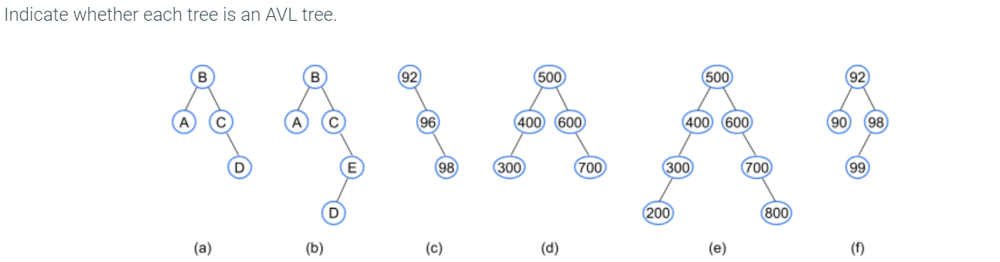

An AVL tree doesn't always have the minimum possible height, but has a height no worse than 1.5x the minimum.
What is the minimum possible height of an AVL tree with 7 nodes? 2
What is the maximum possible height of an AVL tree with 7 nodes? 3. 1.5 x 2 = 3
6.2 AVL Rotations
Inserting an item into an AVL tree may require rearranging the tree to maintain height balance. A rotation is a local rearrangement of a BST that maintains the BST ordering property while rebalancing the tree.
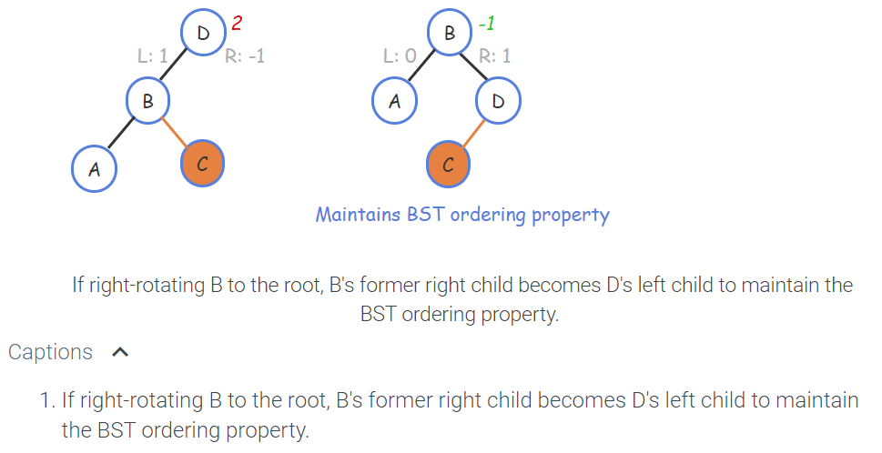
When an AVL tree node has a balance factor of 2 or -2, which only occurs after an insertion or removal, the node must be rebalanced via rotations.
6.3 AVL Insertions

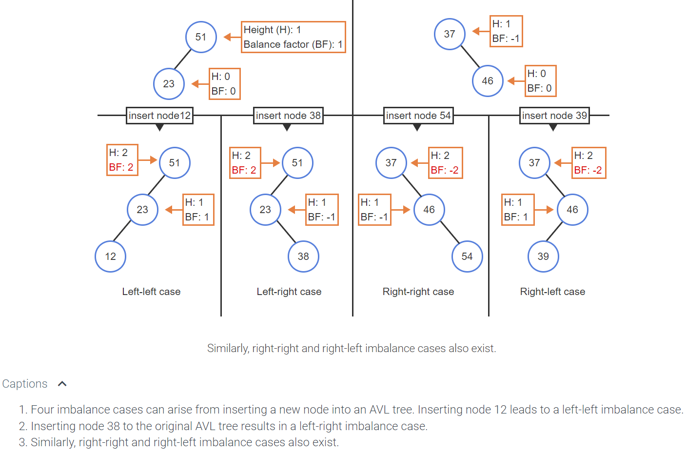
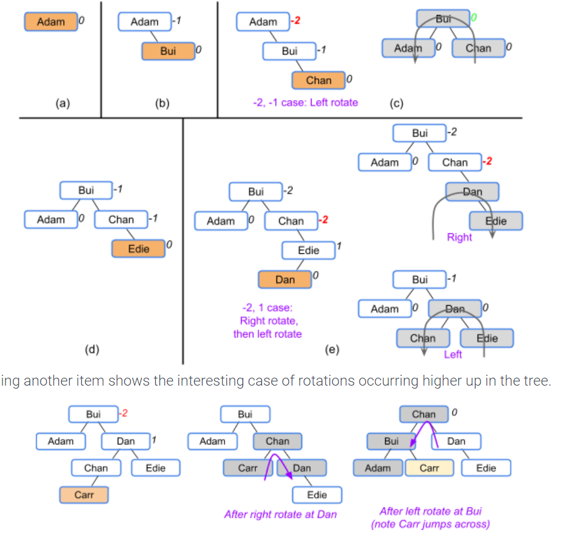
6.4 AVL Removals
6.5 Python AVL Tree
See example folder
6.6 Red-black tree: A balance tree
A red-black tree is a BST with two node types, namely red and black, and supporting operations that ensure the tree is balanced when a node is inserted or removed. The below red-black tree's requirements ensure that a tree with N nodes will have a height of O(log N).
- Every node is colored either red or black.
- The root node is black.
- A red node's children cannot be red.
- A null child is considered to be a black leaf node.
- All paths from a node to any null leaf descendant node must have the same number of black nodes.
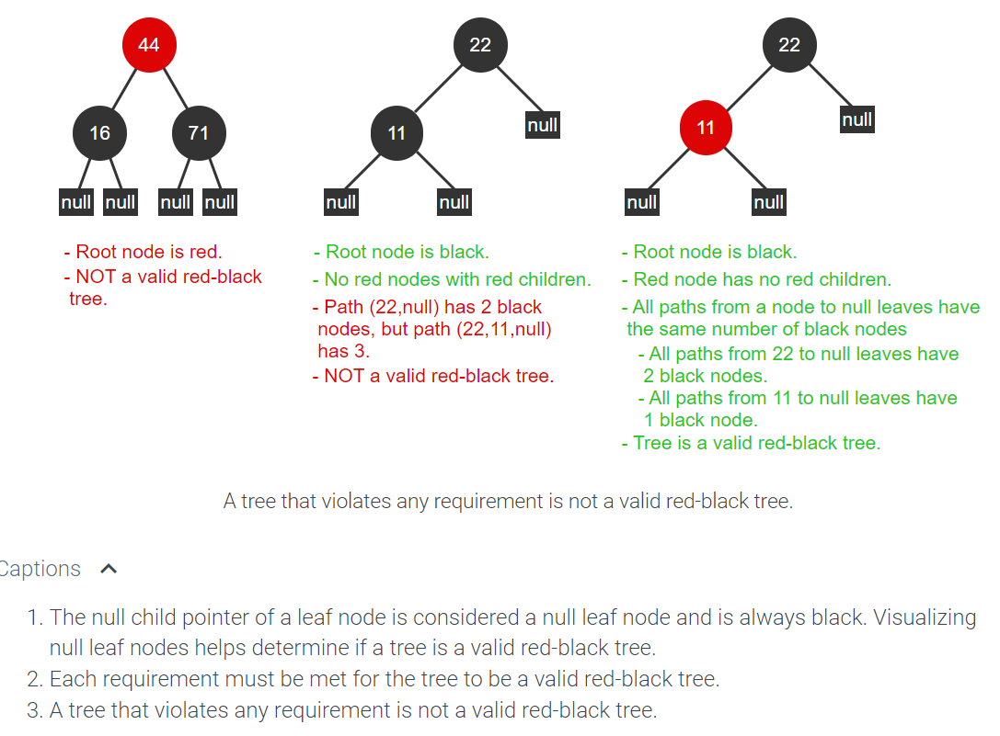


Coloring all nodes black will NOT make the tree a valid red-black tree. Unless all levels in a BST are full, coloring all nodes black will inevitably violate the requirement that all paths to null leaf nodes must have the same number of black nodes.
6.7 Red-black Rotations
A left rotation at a node causes the node's right child to take the node's place in the tree. A right rotation at a node causes the node's left child to take the node's place in the tree.
6.8 Red-black Insertion
6.9 Red-black removal
Prepare for removal algorithm case descriptions:
| Case # | Condition | Action if condition is true | Process additional cases after action? |
|---|---|---|---|
| 1 | Node is red or node's parent is null. | None. | No |
| 2 | Sibling node is red. | Color parent red and sibling black. If node is left child of parent, rotate left at parent node, otherwise rotate right at parent node. | Yes |
| 3 | Parent is black and both of sibling's children are black. | Color sibling red and call removal preparation function on parent. | No |
| 4 | Parent is red and both of sibling's children are black. | Color parent black and sibling red. | No |
| 5 | Sibling's left child is red, sibling's right child is black, and node is left child of parent. | Color sibling red and sibling's left child black. Rotate right at sibling. | Yes |
| 6 | Sibling's left child is black, sibling's right child is red, and node is right child of parent. | Color sibling red and sibling's right child black. Rotate left at sibling. | Yes |
6.10 Python: Red-black tree
See example in folder 6.10 Red Black Tree.
Use these values as input:
15 42 77 18 90 21 36 19 89 47
15 47 40 19
6.11 LAB: AVL tree Nth largest operation
6.12 LAB: Red-black tree Nth Largest operation
7 Heaps
7.1 Heaps
A use for heaps is to keep the order of priority.
A max-heap is a complete binary tree that maintains the simple property that a node's key is greater than or equal to the node's children's keys. A max-heap's root always has the maximum key in the entire tree.
Inserts fill a level (left-to-right) before adding another level, so the tree's height is always the minimum possible. The upward movement of a node in a max-heap is called percolating.
A remove from a max-heap is always a removal of the root. Removing a node (always the root): Replace with last node, then percolate node down.
The complexity for removing the root is O(logN), same for inserting.
Given N nodes, the height of the max-heap is floor(logN)
Min-heap is the opposite of the max-heap, the lowest number has the highest priority and is placed at the root.
7.2 Heaps using arrays
Heaps are typically stored using arrays.
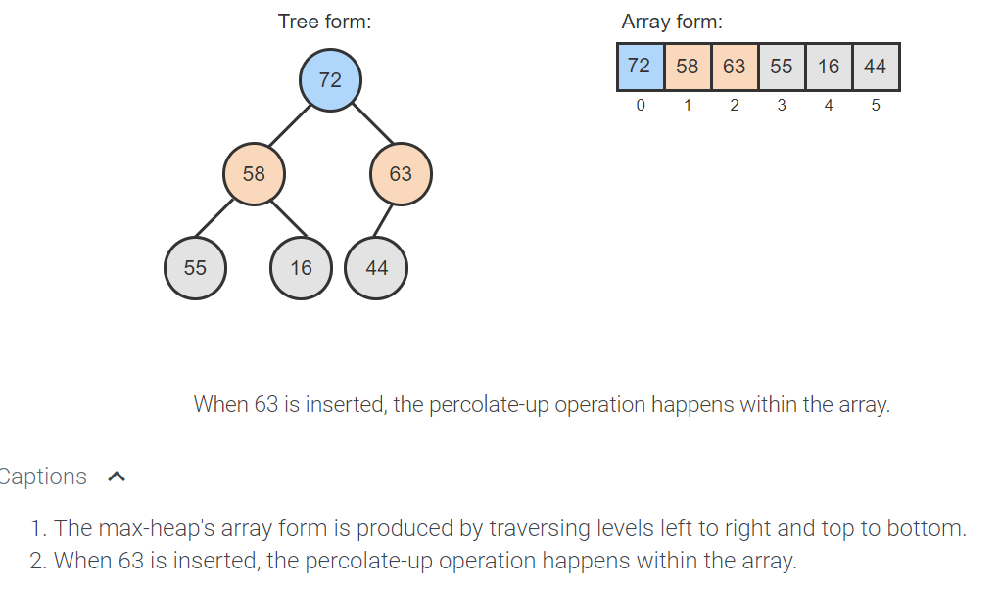
7.3 Python: Heaps
See folder 7.3 Heap
7.4 Heap sort
Heapsort is a sorting algorithm that takes advantage of a max-heap's properties by repeatedly removing the max and building a sorted array in reverse order. An array of unsorted values must first be converted into a heap. The heapify operation is used to turn an array into a heap.
Heap Sort will sort an array.
Heapsort begins by heapifying the array into a max-heap and initializing an end index value to the size of the array minus 1. Heapsort repeatedly removes the maximum value, stores that value at the end index, and decrements the end index. The removal loop repeats until the end index is 0.
7.5 Python Heap Sort
See folder 7.5 Heap Sort
7.6 Priority queue abstract data type
A priority queue is a queue where each item has a priority, and items with higher priority are closer to the front of the queue than items with lower priority.
The priority queue enqueue operation inserts an item such that the item is closer to the front than all items of lower priority, and closer to the end than all items of equal or higher priority.
The priority queue dequeue operation removes and returns the item at the front of the queue, which has the highest priority.
When enqueueing items of equal priority, the first-in-first-out rules apply. So the second item with priority 7 comes after the first.

7.7 Treaps
A treap uses a main key that maintains a binary search tree ordering property, and a secondary key generated randomly (often called "priority") during insertions that maintains a heap property. The combination usually keeps the tree balanced. The word "treap" is a mix of tree and heap.

Deletion
The when a node is marked for deletion, the priority is set to negative infinity. Then the node is percolated down.

7.8 LAB: Timeout manager with Priority Queue
8 Sets
8.1 Set abstract data type
A set is an unordered collection. There are no duplicates.
Represented in curly brackets: {78, 32, 57, 82}
When storing objects, set implementations commonly distinguish elements based on an element's key value: A primitive data value that serves as a unique identifier for the element.
8.2 Set Operations

Filter
Map: produces a new set that had a function applied to each element in the set.
8.3 Static and dynamic set operations
A dynamic set is a set that can change after being constructed. A static set is a set that doesn't change after being constructed. You cannot add or remove to a static set.
8.4 Python: Set Implementation
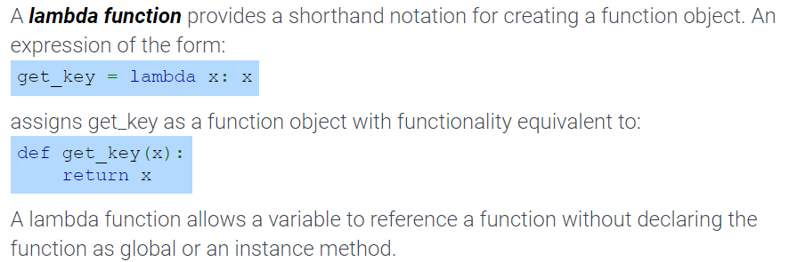
8.5 LAB: Implementing StaticSet using a python set
9 Graphs
9.1 Intro to Graphs
A graph is a data structure for representing connections among items, and consists of vertices connected by edges.
-
A vertex (or node) represents an item in a graph.
-
An edge represents a connection between two vertices in a graph.
In a graph:
-
Two vertices are adjacent if connected by an edge.
-
A path is a sequence of edges leading from a source (starting) vertex to a destination (ending) vertex. The path length is the number of edges in the path.
-
The distance between two vertices is the number of edges on the shortest path between those vertices.
9.2 Applications of graphs
9.3 Graph representations: Adjacency lists
In an adjacency list graph representation, each vertex has a list of adjacent vertices, each list item representing an edge.
A key advantage of an adjacency list graph representation is a size of O(V + E), because each vertex appears once, and each edge appears twice. V refers to the number of vertices, E the number of edges.
However, a disadvantage is that determining whether two vertices are adjacent is O(V), because one vertex's adjacency list must be traversed looking for the other vertex, and that list could have V items.
A sparse graph has far fewer edges than the maximum possible.
9.4 Graph representations: Adjacency matrices
9.5 Graphs: Breadth-first search
Graph traversal: an algorithm visits every vertex in a graph
** Breadth-first search (BFS): is a traversal that visits a starting vertex, then all vertices of distance 1 from that vertex, then of distance 2, and so on, without revisiting a vertex.
If multiple traversal paths exist for reaching a single vertex, then the traversal of the graph is not unique.

When the BFS algorithm first encounters a vertex, that vertex is said to have been discovered. In the BFS algorithm, the vertices in the queue are called the frontier, being vertices thus far discovered but not yet visited.
9.6 Graphs: Depth-first search
A depth-first search (DFS) is a traversal that visits a starting vertex, then visits every vertex along each path starting from that vertex to the path's end before backtracking.

9.7 Directed Graphs
A directed graph, or digraph, consists of vertices connected by directed edges.
A directed edge is a connection between a starting vertex and a terminating vertex. In a directed graph, a vertex Y is adjacent to a vertex X, if there is an edge from X to Y.

In a directed graph:
-
A path is a sequence of directed edges leading from a source (starting) vertex to a destination (ending) vertex.
-
A cycle is a path that starts and ends at the same vertex. A directed graph is cyclic if the graph contains a cycle, and acyclic if the graph does not contain a cycle.

9.8 Weighted graphs
A weighted graph associates a weight with each edge. A graph edge's weight, or cost, represents some numerical value between vertex items, such as flight cost between airports, connection speed between computers, or travel time between cities. A weighted graph may be directed or undirected.
The path length is the sum of the edge weights in the path.
The cycle length is the sum of the edge weights in a cycle. A negative edge weight cycle has a cycle length less than 0.
A shortest path does not exist in a graph with a negative edge weight cycle, because each loop around the negative edge weight cycle further decreases the cycle length, so no minimum exists.
9.9 Python Graphs
9.10 Python: Breadth-first search
See folder 9.10 Graphs. Enter the name "Taj"
9.11 Python Depth First Search
See folder 9.11 Depth First
9.12 Python: Dijkstra's shortest path
See example in 9.12 Dijkstra
Dijkstra's algorithm computes the shortest path from a given starting vertex to all other vertices in the graph.
To perform Dijjkstra's algorithm, the Graph and Vertex classes are used. The Vertex class is extended to include two additional data members:
-
distance - The total sum of the edge weights on a path from some start vertex to the vertex.
-
pred_vertex - A reference to the vertex that occurs immediately before the vertex, on a path from some start vertex to the vertex.
9.13 Algorithm: Dijkstra's shortest path
Dijkstra's algorithm initializes all vertices' distances to infinity (∞), initializes all vertices' predecessors to null, and enqueues all vertices into a queue of unvisited vertices. The algorithm then assigns the start vertex's distance with 0.
9.14 Algorithm: Bellman-Ford's shortest path
The Bellman-Ford shortest path algorithm, created by Richard Bellman and Lester Ford, Jr., determines the shortest path from a start vertex to each vertex in a graph.
The runtime for the Bellman-Ford shortest path algorithm is O(VE). The outer loop (the main iterations) executes V-1 times. In each outer loop execution, the algorithm visits each vertex and follows the subset of edges to adjacent vertices, following a total of E edges across all loop executions.
9.15 Python: Bellman-Ford's shortest path
See example 9.15 Bellman Ford
9.16 Topological sort
A topological sort of a directed, acyclic graph produces a list of the graph's vertices such that for every edge from a vertex X to a vertex Y, X comes before Y in the list.
Get Help on Topological Sort!!!!
Can be used to graph out a degree's curriculum path. Math 101, Phys 101 has to come before CS 103.


9.17 Python: Topological sort
See example 9.17 Topo Sort folder
The following program creates the graph shown earlier in this section and prints the result of the topological_sort() function. Verify that the program outputs a valid topological ordering of the graph.
Experiment with the algorithm by adding and removing some edges. See if you can predict the results before trying the program. (Make each modification starting from the original graph, not from the graph resulting from the previous step.)
- Add an edge from E to A.
- Add an edge from C to G.
- Remove the edge from A to B.
- Add an edge from F to C.
9.18 Minimum Spanning Tree
A graph's minimum spanning tree is a subset of the graph's edges that connect all vertices in the graph together with the minimum sum of edge weights. The graph must be weighted and connected.
A connected graph contains a path between every pair of vertices.

Kruskal's minimum spanning tree algorithm determines the subset of a graph's edges that connect all the graph's vertices with the minimum possible sum of edge weights. Kruskal's minimum spanning tree algorithm uses three collections:
- edgeQueue: A priority queue of edges, initially containing all graph edges. Edge weights are priorities.
- result: A collection of edges comprising the minimum spanning tree, initially empty.
- vertexSets: A collection of vertex sets. Each set represents vertices connected by edges in result. Initially, vertexSets contains one set for each vertex.
9.19 Python: Minimum spanning tree
See folder 9.19 Min Span Tree
The minimum spanning tree algorithm requires a priority queue for edges, where each edge's weight is the edge's priority. The EdgeWeight class implements a simple edge object that stores to and from vertices, as well as weight. Comparison operators are implemented such that edges are compared to each other using edge weights.
9.20 All pairs shortest path
An all pairs shortest path algorithm determines the shortest path between all possible pairs of vertices in a graph.

The Floyd-Warshall all-pairs shortest path algorithm generates a |V| x |V| matrix of values representing the shortest path lengths between all vertex pairs in a graph. Graphs with cycles and negative edge weights are supported, but the graph must not have any negative cycles.

9.21 Python: All pairs shortest path
See 9.21 All Pairs Short Path
9.22 LAB: Graph representations
10 B-Trees
10.1 B-Trees
In a binary tree, each node has one key and up to two children.
A B-tree with order K is a tree where nodes can have up to K-1 keys and up to K children. The order is the maximum number of children a node can have. Ex: In a B-tree with order 4, a node can have 1, 2, or 3 keys, and up to 4 children. B-trees have the following properties:
- All keys in a B-tree must be distinct.
- All leaf nodes must be at the same level.
- An internal node with N keys must have N+1 children.

- Keys in a node are stored in sorted order from smallest to largest.
- Each key in a B-tree internal node has one left subtree and one right subtree. All left subtree keys are < that key, and all right subtree keys are > that key.

2-3-4 Tree
A 2-3-4 tree is an order 4 B-tree. Therefore, a 2-3-4 tree node contains 1, 2 or 3 keys. A leaf node in a 2-3-4 tree has no children.
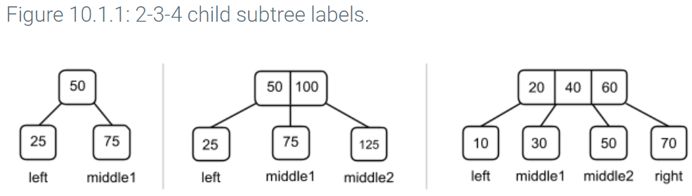
10.2 2-3-4 tree search algorithm
10.3 2-3-4 tree insert algorithm
New keys are always inserted into leaf nodes in a 2-3-4 tree. Insertion returns the leaf node where the key was inserted, or null if the key was already in the tree.
Only a full node can be split during insertion.
Splits

2-3-4 tree non full leaf insertion cases
| Condition | Outcome |
|---|---|
| New key equals an existing key in node | No insertion takes place, and the node is not altered. |
| New key is \< node's first key | Existing keys in node are shifted right, and the new key becomes node's first key. |
| Node has only 1 key or new key is \< node's middle key | Node's middle key , if present, becomes last key, and new key becomes node's middle key. |
| None of the above | New key becomes node's last key. |
B-tree insert with preemptive split
Multiple insertion schemes exist for 2-3-4 trees. The preemptive split insertion scheme always splits any full node encountered during insertion traversal. The preemptive split insertion scheme ensures that any time a full node is split, the parent node has room to accommodate the middle value from the child.
10.4 2-3-4 tree rotations and fusion
Removing an item from a 2-3-4 tree may require rearranging keys to maintain tree properties. A rotation is a rearrangement of keys between 3 nodes that maintains all 2-3-4 tree properties in the process. The 2-3-4 tree removal algorithm uses rotations to transfer keys between sibling nodes. A right rotation on a node causes the node to lose one key and the node's right sibling to gain one key. A left rotation on a node causes the node to lose one key and the node's left sibling to gain one key.
A left rotation moves a key into the left sibling node. This cannot happen if the node has no left sibling.
Fusion
A fusion is a combination of 3 keys: 2 from adjacent sibling nodes that have 1 key each, and a third from the parent of the siblings. Fusion is the inverse operation of a split.
10.5 2-3-4 tree removal
Merge
Only nodes with exactly one key can be merged.
A node must have 2 or 3 keys to transfer a key to a an adjacent sibling during a merge.
A node has exactly 3 keys after fusion
After a node is merged, the parent of the node will be left with 1,2, or 3 keys.
Removal
Leaf Removal: Remove key 33
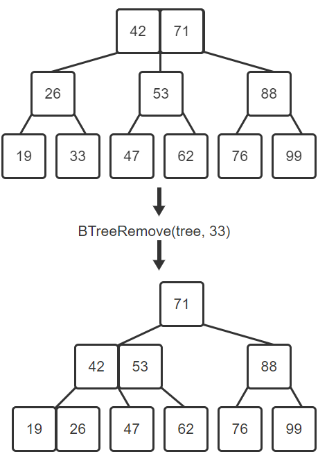
Merging makes no sense, get help
10.6 Python 2-3-4 trees
See 10.6 BTree
Insert the values:
15 42 77 18 90 21 36 19 89 47 28 39 55 73 99
15 47 40 19 55 77 58 89
10.7 LAB Itwrable 2-3-4 tree
11 Searching and sorting algorithms
11.1 Searching and algorithms
Linear search is a search algorithm that starts from the beginning of a list, and checks each element until the search key is found or the end of the list is reached.
An algorithm's runtime is the time the algorithm takes to execute.
11.2 Binary Search
Binary search is a faster algorithm for searching a list if the list's elements are sorted and directly accessible. Binary search first checks the middle element of the list.
Efficiency: Number of steps to solve a binary search are floor(log2 N) + 1
11.3 LAB: Binary search with custom comparer
11.4 Python: Linear and binary search
11.5 Constant Timee Operations
Therefore, the theoretical analysis of an algorithm describes runtime in terms of number of constant time operations, not nanoseconds. A constant time operation is an operation that, for a given processor, always operates in the same amount of time, regardless of input values.
-
Assignment operations like y = 10
-
Multiplication like 2 x 5
11.6 Growth of functions and complexity
An algorithm with runtime complexity T(N) has a lower bound and an upper bound.
- Lower bound: A function f(N) that is ≤ the best case T(N), for all values of N ≥ 1.
- Upper bound: A function f(N) that is ≥ the worst case T(N), for all values of N ≥ 1.
I think the lower bound is always the polynomial. EX: best case runtimes is T(N) = 3N + 6. The best case runtime complexity is 3N. Or if the best case is 2N^2 + 5N + 5, then the lower bound is 2N^2.
I think the upper bound is the sum of the integers in the polynomial. EX: a worst case runtime of 3N^2 + 10N + 17 has the upper bound of 30N^2. Or for T(N) = 5N^2 + 7N, the upper bound is 12N^2.

O is Omicron
horseshoe is Omega
O with a center mark is theta

11.7 O notation
Big O notation is a mathematical way of describing how a function (running time, or runtime, of an algorithm) behaves in relation to the input size.

Determine Composite Big O notations


Common Big O complexities
Constant - O(1)
Logarithmic - O(log N)
Binary Search
def binary_search(numbers, key):
low = 0
high = len(numbers) - 1
while high >= low:
mid = (high + low) // 2
if numbers[mid] < key:
low = mid + 1
elif numbers[mid] > key:
high = mid - 1
else:
return mid
return -1 # not found
Linear - O(N)
def linear_search(numbers, key):
for i in range(len(numbers)):
if numbers[i] == key:
return i
return -1 # not found
Log-Linear - O(N log N)
def merge_sort(numbers, i, k):
if i < k:
j = (i + k) // 2 # Find midpoint
merge_sort(numbers, i, j) # Sort left part
merge_sort(numbers, j + 1, k) # Sort right part
merge(numbers, i, j, k) # Merge parts
Quadratic - O(N^2)
def selection_sort(numbers):
for i in range(len(numbers)):
index_smallest = i
for j in range(i + 1, len(numbers)):
if numbers[j] < numbers[index_smallest]:
index_smallest = j
temp = numbers[i]
numbers[i] = numbers[index_smallest]
numbers[index_smallest] = temp
Exponential - O(c^N)
11.8 Algorithm analysis
Worst-case runtime: longest execution

Constant Runtime
Since constants are omitted in big-O notation, any constant number of constant time operations is O(1).
Ex: An algorithm with a single loop that executes five operations before the
loop, three operations in each loop iteration, and six operations after the
loop would have a runtime of f(N) = 5 + 3N + 6, which can be written as
O(1) + O(N) + O(1) = O(N)

Nested Loop Big O notation

11.9 Algorithm efficiency
Algorithm efficiency is typically measured by the algorithm's computational complexity. Computational complexity is the amount of resources used by the algorithm. The most common resources considered are the runtime and memory usage.
An algorithm's runtime complexity is a function, T(N), that represents the number of constant time operations performed by the algorithm on an input of size N.
An algorithm's space complexity is a function, S(N), that represents the number of fixed-size memory units used by the algorithm for an input of size N. Ex: The space complexity of an algorithm that duplicates a list of numbers is S(N) = 2N + k, where k is a constant representing memory used for things like the loop counter and list pointers.
An algorithm's auxiliary space complexity is the space complexity not including the input data. Ex: An algorithm to find the maximum number in a list will have a space complexity of S(N) = N + k, but an auxiliary space complexity of S(N) = k, where k is a constant.
11.10 Recursive definitions
A recursive algorithm is an algorithm that breaks the problem into smaller subproblems and applies the algorithm itself to solve the smaller subproblems.
Because a problem cannot be endlessly divided into smaller subproblems, a recursive algorithm must have a base case: A case where a recursive algorithm completes without applying itself to a smaller subproblem.
11.11 Recursive algorithms
Fibonacci
The Fibonacci sequence is a numerical sequence where each term is the sum of the previous 2 terms in the sequence, except the first 2 terms, which are 0 and 1. A recursive function can be used to calculate a Fibonacci number: A term in the Fibonacci sequence.
FibonacciNumber(termIndex) {
if (termIndex == 0)
return 0
else if (termIndex == 1)
return 1
else
return FibonacciNumber(termIndex - 1) + FibonacciNumber(termIndex - 2)
}
Binary Search
function BinarySearch(numbers, low, high, key) {
if (low > high)
return -1
mid = (low + high) / 2
if (numbers[mid] < key) {
return BinarySearch(numbers, mid + 1, high, key)
}
else if (numbers[mid] > key) {
return BinarySearch(numbers, low, mid - 1, key)
}
return mid
}
11.12 Analyzing the time complexity of recursive algorithms
Runtime complexity of recursion: T(N) = O(1) + T(N / 2). Such a function is known as a recurrence relation: A function f(N) that is defined in terms of the same function operating on a value < N. T must be on both sides of the equation

A useful tool for solving recurrences is a recursion tree: A visual diagram of an operation done by a recursive function, that separates operations done directly by the function and operations done by recursive calls.
11.13 Overview of fast sorting algorithms
A fast sorting algorithm is a sorting algorithm that has an average runtime complexity of O(NlogN) or better:

A element comparison sorting algorithm is a sorting algorithm that operates on an array of elements that can be compared to each other. Radix Sort cannot be an element comparison sorting algorithm.
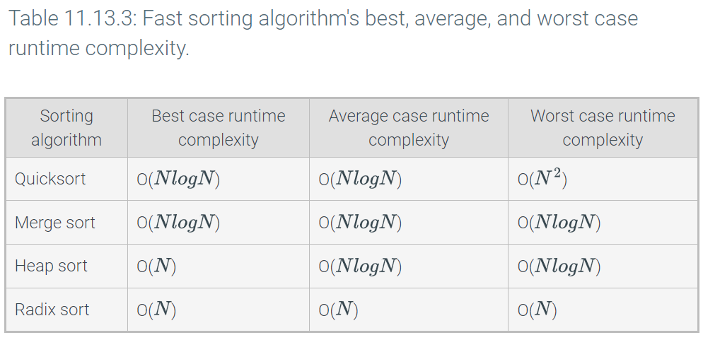
11.14 Sorting Introduction
11.15 Selection Sort
See 11.15 Selection Sort file
Selection sort is a sorting algorithm that treats the input as two parts, sorted and unsorted, and repeatedly selects the proper next value to move from the unsorted part to the end of the sorted part.
11.16 Python Selection Sort
11.17 Insertion Sort
Insertion sort is a sorting algorithm that treats the input as two parts, sorted and unsorted, and repeatedly inserts the next value from the unsorted part into the correct location in the sorted part.
Runtime: O(N^2)
For sorted or nearly sorted inputs, insertion sort's runtime is O(N). A nearly sorted list contains only a few elements not in sorted order. Ex: [4, 5, 17, 25, 89, 14] is nearly sorted having only one element not in the sorted position.
11.18 Python Insertion Sort
11.19 Shell Sort
Shell sort is a sorting algorithm that treats the input as a collection of interleaved lists, and sorts each list individually with a variant of the insertion sort algorithm. Shell sort uses gap values to determine the number of interleaved lists.
A gap value is a positive integer representing the distance between elements in an interleaved list. For each interleaved list, if an element is at index i, the next element is at index i + gap value.
Shell sort begins by choosing a gap value K and sorting K interleaved lists in place.
Shell sort divides the list up into gaps. Each gap is sorted, then the gaps are returned to the list. The list is not fully sorted, but there will be fewer operations to perform using the insertion sort to finally get the order right.
11.20 Python Shell Sort
See example 11.20_shell_sort
11.21 Quicksort
Quicksort is a sorting algorithm that repeatedly partitions the input into low and high parts (each unsorted), and then recursively sorts each of those parts. To partition the input, quicksort chooses a pivot to divide the data into low and high parts.
The pivot can be any value within the array, commonly the value of the middle array element. Ex: For the list [4, 34, 10, 25, 1], the middle element is located at index 2 (the middle of indices 0..4) and has a value of 10.
h is the pivot. The pivot and everything to the left is considered low partition.
If there are multiple values equal to the pivot, the value/pivot may appear in the
high partition
Quicksort runtime: O(N^2)
11.22 Python Quick Sort
see 11.22_quick_sort
11.23 Merge Sort
Merge sort is a sorting algorithm that divides a list into two halves, recursively sorts each half, and then merges the sorted halves to produce a sorted list.

The index variable i is the index of the first element in the list, and the index variable k is the index of the last element. The index variable j is used to divide the list into two halves. Elements from i to j are in the left half, and elements from j + 1 to k are in the right half.
Merge Sort runtime = O(N log N)
Requires O(N) additional memory elements for the temporary array
11.24 Python Merge Sort
see 11.24_merge_sort file
11.25 LAB: Natural merge sort
The merge sort algorithm recursively divides the list in half until a list with one element is reached. A variant of merge sort, called natural merge sort, instead finds already-sorted runs of elements and merges the runs together.
Assignment:
Step 1: Implement the get_sorted_run_length() method Implement the get_sorted_run_length() method in NaturalMergeSorter.py. Access NaturalMergeSorter.py by clicking on the orange arrow next to main.py at the top of the coding window.
get_sorted_run_length() has two parameters:
- integer_list: a list of integers and
- start_index: an integer for the run's starting index. The method returns the number of list elements sorted in ascending order, starting at start_index and ending either at the end of the sorted run, or the end of the list, whichever comes first. The method returns 0 if start_index is out of bounds.
File main.py has several test cases for get_sorted_run_length() that can be run by clicking the "Run program" button. One test case also exists for natural_merge_sort(), but that can be ignored until step two is completed.
The program's output does not affect grading.
Submit for grading to ensure that the get_sorted_run_length() unit tests pass before proceeding.
Step 2: Implement the natural_merge_sort() method Implement the natural_merge_sort() method in NaturalMergeSorter.py. natural_merge_sort() must:
- Start at index i=0
- Get the length of the first sorted run, starting at i
- Return if the first run's length equals the list's length
- If the first run ends at the list's end, reassign i=0 and repeat step 2
- Get the length of the second sorted run, starting immediately after the first
- Merge the two runs with the provided merge() method
- Reassign i with the first index after the second run, or 0 if the second run ends at the list's end
- Go to step 2
The assignment is in 11.25 Natural Merge Sort folder
11.26 Radix Sort
Radix sort is a sorting algorithm designed specifically for integers. The algorithm makes use of a concept called buckets and is a type of bucket sort.
Any array of integer values can be subdivided into buckets by using the integer values' digits. A bucket is a collection of integer values that all share a particular digit value. Ex: Values 57, 97, 77, and 17 all have a 7 as the 1's digit, and would all be placed into bucket 7 when subdividing by the 1's digit.

11.27 Python Radix Sort
See example 11.27_radix_sort
11.28 Python: Sorting with different operators
11.29 Bubble Sort
Bubble sort is a sorting algorithm that iterates through a list, comparing and swapping adjacent elements if the second element is less than the first element. Bubble sort uses nested loops. Given a list with N elements, the outer i-loop iterates N - 1 times. Each iteration moves the i^th largest element into sorted position. The inner j-loop iterates through all adjacent pairs, comparing and swapping adjacent elements as needed, except for the last i pairs that are already in the correct position.
Because of the nested loops, bubble sort has a runtime of O(N^2). Bubble sort is often considered impractical for real-world use because many faster sorting algorithms exist.
BubbleSort(numbers, numbersSize) {
for (i = 0; i < numbersSize - 1; i++) {
for (j = 0; j < numbersSize - i - 1; j++) {
if (numbers[j] > numbers[j+1]) {
temp = numbers[j]
numbers[j] = numbers[j + 1]
numbers[j + 1] = temp
}
}
}
}
11.30 Quickselect
Quickselect is an algorithm that selects the k^th smallest element in a list. Ex: Running quickselect on the list (15, 73, 5, 88, 9) with k = 0, returns the smallest element in the list, or 5.
For a list with N elements, quickselect uses quicksort's partition function to partition the list into a low partition containing the X smallest elements and a high partition containing the N-X largest elements.
Best case average runtime is O(N), worst case goes through the whole list O(N^2)
11.31 Python Quickselect
see example 11.31_quickselect
11.32 Bucket Sort
Bucket sort is a numerical sorting algorithm that distributes numbers into buckets, sorts each bucket with an additional sorting algorithm, and then concatenates buckets together to build the sorted result.

11.33 LAB: Descending selection sort with output during execution
11.34 LAB: Sorting user IDs
11.35 LAB: Insertion Sort
11.36 LAB: Merge sort
11.37 LAB: Binary Search
12 Python
12.1 Programming (General)
computational thinking: creating a sequence of instructions to solve a problem
12.2 Programming using Python
An interactive interpreter is a program that allows the user to execute one line of code at a time.
The interactive interpreter displays a prompt (">>>") that indicates the interpreter is ready to accept code.
Expressions are code that return a value when evaluated
A statement is a program instruction. A program mostly consists of a series of statements, and each statement usually appears on its own line.
12.3 Basic input and output
print()
Each use of print() outputs on a new line. However, sometimes a programmer may want to keep output on the same line. Adding end=' ' inside of print() keeps the output of the next print on the same line, separated by a single space character. Ex: print('Hello', end=' ')
Output can be moved to the next line using the newline character "\n". Ex: print('1\n2\n3') prints "1" on the first line, "2" on the second line, and "3" on the third line of output.
"\t" to insert a tab
Any space, tab, or newline is called whitespace.
input()
input() will read text entered by the user, and assign the result as a new string to the best_friend variable
Convert string input to int with int(input())
Errors
Python interpreter is able to detect syntax errors when the program is initially loaded, prior to actually executing any of the statements in the code.
Common error types:
| Error type | Description |
|---|---|
| SyntaxError | The program contains invalid code that cannot be understood. |
| IndentationError | The lines of the program are not properly indented. |
| ValueError | An invalid value is used, which can occur if giving letters to int(). |
| NameError | The program tries to use a variable that does not exist. |
| TypeError | An operation uses incorrect types, which can occur if adding an integer to a string. |
Logic Errors: often called bugs, occur by the programer coding incorrect logic
12.5 Development Environment
Python Integrated Development Envirionments (IDE):
-
IDLE is the official Python IDE that is distributed with the installation of Python from https://python.org. IDLE provides a basic environment for editing and running programs.
-
PyDev (http://pydev.org) is a plugin for the popular Eclipse program. PyDev includes extra features such as code completion, spell checking, and debugging, which are useful tools while programming.
-
For learning purposes, web-based tools like CodePad (http://www.codepad.co) or Repl (http://www.repl.it) are helpful.
12.6 Computers and programs (General)
12.7 Computer Tour
12.8 Language History
Sripting Language:
Interpreted execution is slower because it requires multiple interpreter instructions to execute one script instruction. But the advantages include avoiding the compilation step during programming and running the same script on different processors as long as each processor has an interpreter installed.
Python 3.0 is not backward compatible, so Python 2.7 programs cannot run on Python 3.0 or later interpreters.
19.9 Why whitespace matters
20 Classes
20.1 Classes Introduction
In programming, an object is a grouping of data (variables) and operations that can be performed on that data (functions or methods).
Abstraction occurs when a user interacts with an object at a high level, allowing lower-level internal details to remain hidden
20.2 Classes Grouping Data
The class keyword can be used to create a user-defined type of object containing groups of related variables and functions.
An instantiation operation is performed by "calling" the class, using parentheses like a function call as in my_time = Time(). An instantiation operation creates an instance, which is an individual object of the given class. An instantiation operation automatically calls the __init__ method defined in the class definition. A method is a function defined within a class. The __init__ method, commonly known as a constructor, is responsible for setting up the initial state of the new instance.
The __init__ method has a single parameter, "self", that automatically references the instance being created.
Attributes can be accessed using the attribute reference operator "." (sometimes called the member operator or dot notation).
Good practice is to use initial capitalization for each word in a class name. So, appropriate names might include LunchMenu, CoinAmounts, or PDFFileContents.
20.3 Instance methods
20.4 CLass and instance object types
A program with user-defined classes contains two additional types of objects: class objects and instance objects. A class object acts as a factory that creates instance objects. When created by the class object, an instance object is initialized via the __init__ method.
A class attribute is shared among all instances of that class. Class attributes are defined within the scope of a class.
An instance attribute can be unique to each instance.

20.5 Class example: Seat reservation system
20.6 Class Constructors
20.7 Class Interfaces
A class interface consists of the methods that a programmer calls to create, modify, or access a class instance.
Good practice is to prepend an underscore to methods only used internally by a class.
## 20.8 Class Customization
Class customization is the process of defining how an instance of a class should behave for some common operations.
Class customization can redefine the functionality of built-in operators
like <, >=, +, -, and * when used with class instances, a technique known as
operator overloading.
The below code shows overloading of the less-than (\<) operator of the Time class by defining a method with the __lt__ special method name.
Methods like __lt__ above are known as rich comparison methods.
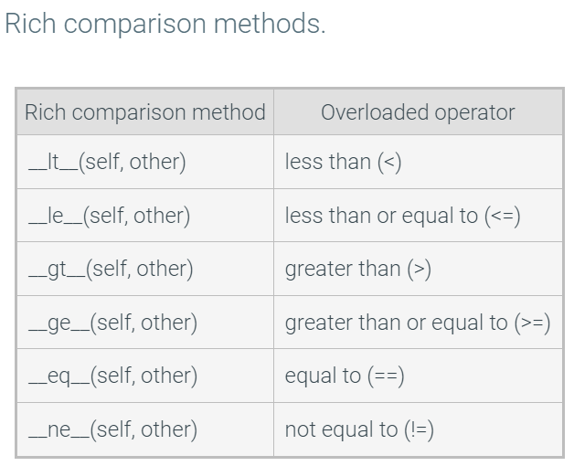
20.9 More operator overloading: Classes as numeric types
To handle subtraction of arbitrary object types, the built-in isinstance() function can be used. The isinstance() function returns a True or False Boolean depending on whether a given variable matches a given type.
def __sub__(self, other):
if isinstance(other, int): # right op is integer
return Time24(self.hours - other, self.minutes)
# more code...
20.10 Memory allocation and garbage collection
The process of an application requesting and being granted memory is known as memory allocation. Memory used by a Python application must be granted to the application by the operating system.
The Python runtime handles memory allocation for the programmer
Memory deallocation is the act of freeing the memory that stores variables or objects in a program. Python is a managed language, meaning objects are deallocated automatically by the Python runtime, and not by the programmer's code.
A reference count is an integer counter that represents how many variables reference an object. When an object's reference count is 0, that object is no longer referenced. Python's garbage collector will deallocate objects with a reference count of 0.
20.11 LAB: Car Value (Classes)
20.12 LAB: Nutritional information (classes/constructors)
20.13 LAB: Artwork label (classes/constructors)
20.14 LAB: Triangle area comparison (classes)
20.15 LAB: Winning team (classes)
20.16 LAB: Vending machine
Recursion
21.1 Recursive Functions
A function that calls itself
21.2 Recursive algorithm: Search
def find(low, high):
mid = (high + low) // 2 # Midpoint of low..high
answer = input(f'Is it {mid}? (l/h/y): ')
if (answer != 'l') and (answer != 'h'): # Base case
print('Got it!')
else:
if answer == 'l':
find(low, mid)
else:
find(mid+1, high)
print('Choose a number from 0 to 100.')
print('Answer with:')
print(' l (your num is lower)')
print(' h (your num is higher)')
print(' any other key (guess is right).')
find(0, 100)
Choose a number from 0 to 100.
Answer with:
l (your num is lower)
h (your num is higher)
any other key (guess is right).
Is it 50? (l/h/y): l
Is it 25? (l/h/y): h
Is it 38? (l/h/y): h
Is it 44? (l/h/y): l
Is it 41? (l/h/y): y
Got it!
The recursive function has an if-else statement, where the if branch is the end of the recursion, known as the base case.